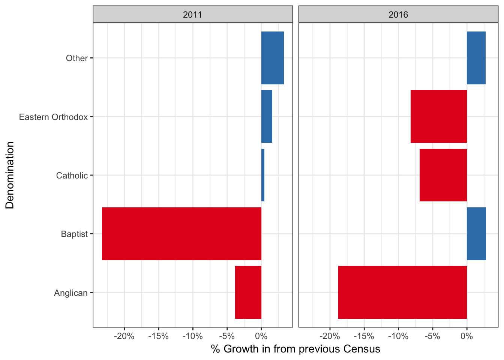

Croydon Park / Enfield - Census results
Croydon Park /Enfield SA2
Source: Community profile: http://www.censusdata.abs.gov.au/census_services/getproduct/census/2016/communityprofile/120031393?opendocument
Population by Age for Census years
Population by Age and Sex
Population Growth
Note declines from 2006 - 2011 but large growth in 25-34 and and similar growth in by 5-14, 35-54 age group.
| Age group | Percent |
|---|---|
| 0-4 | -7.1% |
| 5-14 | 5.8% |
| 15-19 | -0.2% |
| 20-24 | 8.1% |
| 25-34 | 7.4% |
| 35-44 | -0.9% |
| 45-54 | 9.0% |
| 55-64 | 1.4% |
| 65-74 | 16.5% |
| 75-84 | 2.9% |
| 85 + | 35.0% |
Population growth by gender
Note largest growth in 85 . No other obvious changes.
Families and family structure
Number of families by children structure 2016
Growth in families
Largest growth in 2 and 4 children families (existing families having more children?)
Fewer
| Children | growth |
|---|---|
| 1 | 1.3% |
| 2 | 7.9% |
| 3 | -8.0% |
| 4+ | 8.9% |
| Total | 2.5% |
English proficiency
Note growth in low-English proficiency in 15-34 year olds
Religion
Religion by age

Christian Demoniations:
Within Christians
